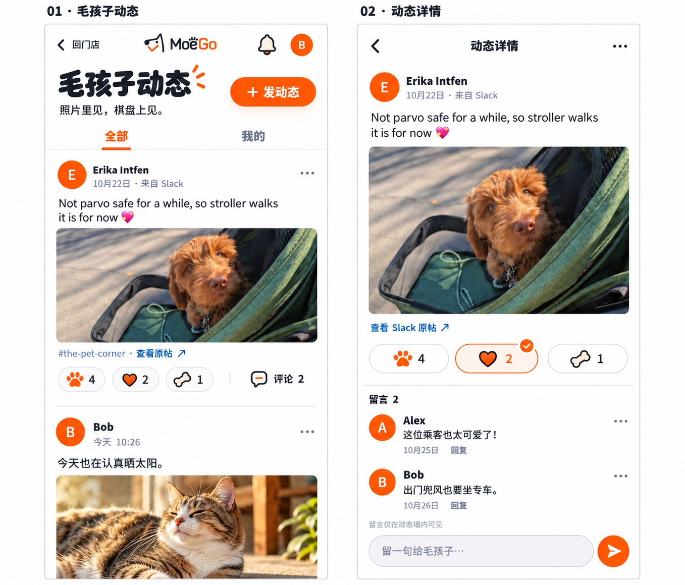
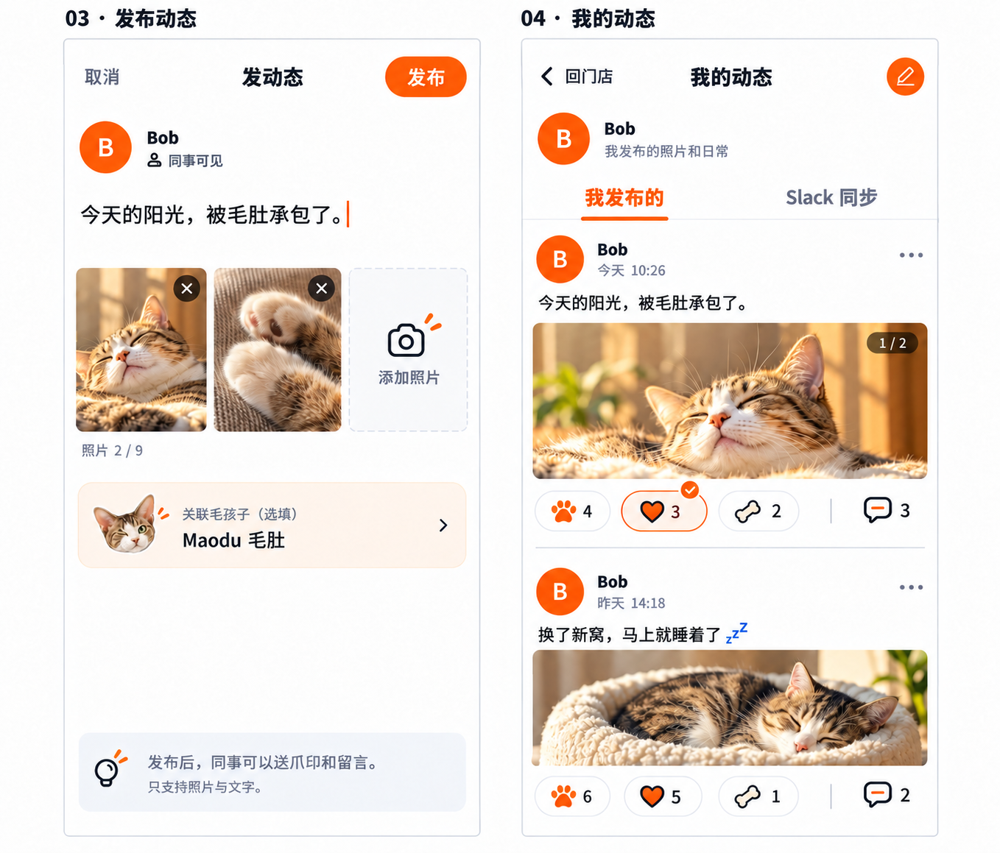
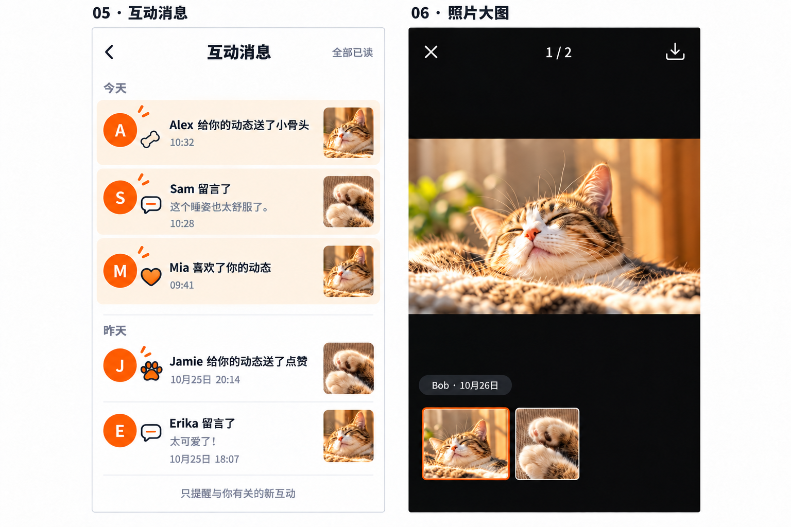
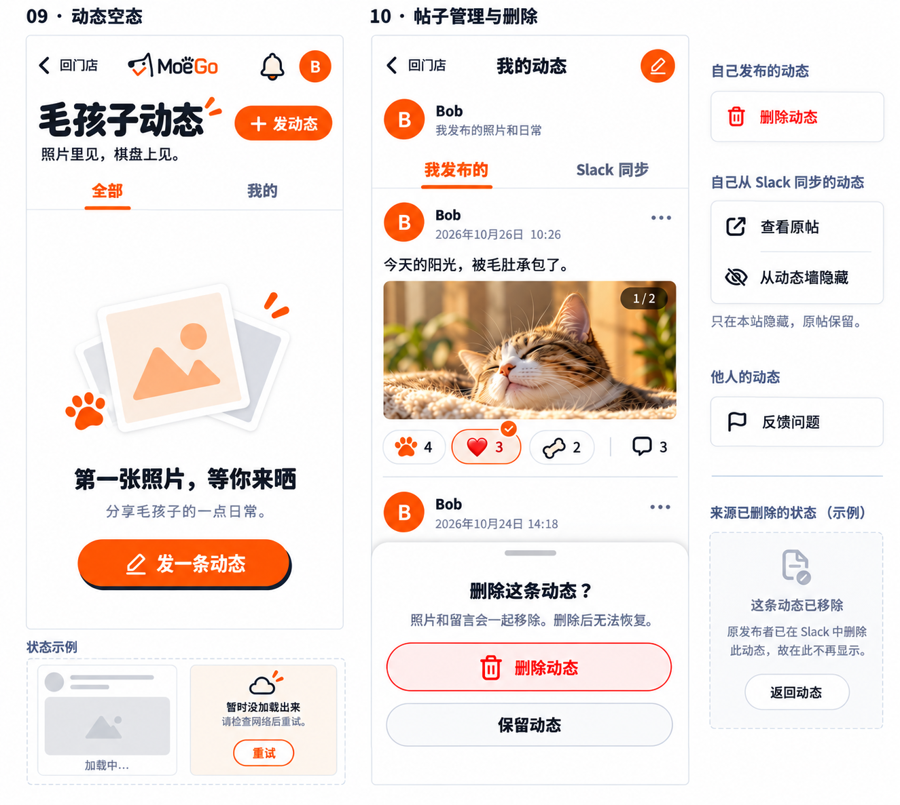
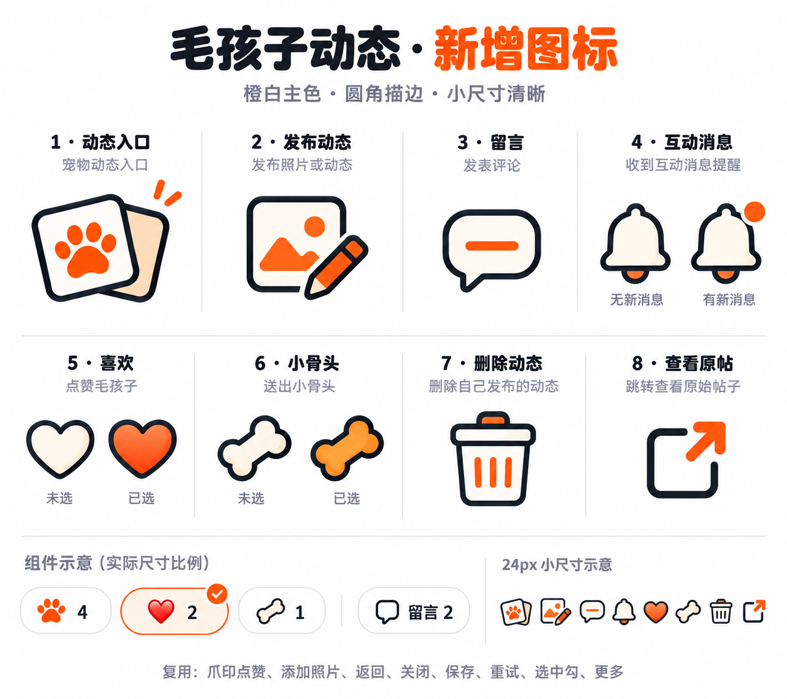

01 · 入口与身份
查看原图 ↗保留开始营业主动作，用紧凑动态入口连接新功能。Slack 验证页是本稿的建议方案，验证前使用通用插画。
02 · 浏览与留言
查看原图 ↗照片优先，爪印、爱心、小骨头紧跟照片。Slack 保留原作者、原日期和原帖入口；站内留言仅在动态墙内可见。

03 · 发布与我的动态
查看原图 ↗照片加几句话即可发布，关联宠物选填。我的动态分成我发布的与 Slack 同步，便于区分内容来源与管理方式。

04 · 互动与照片
查看原图 ↗只提醒与自己有关的互动，打开后定位到对应动态或评论。大图保留照片比例，多图可切换。

05 · 边界状态与管理
查看原图 ↗站内动态删除、Slack 动态本站隐藏、他人动态反馈分开处理。组件样例为互斥状态，不同时出现在页面上。

06 · 新增图标
查看原图 ↗动态入口、发布、留言、互动消息、爱心、小骨头、删除、查看原帖。沿用炭黑圆角描边与橙白主色。
